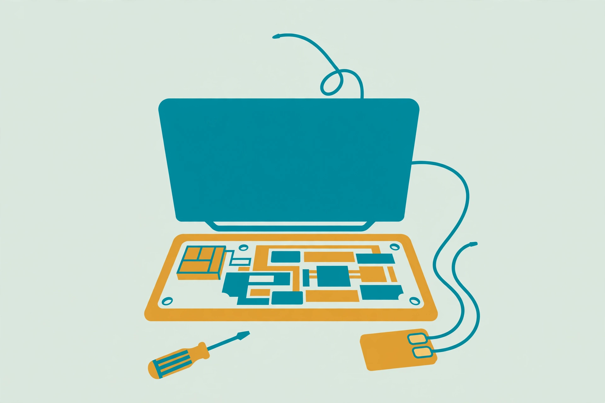

Upgrading your laptop's Wi-Fi card: mini-PCIe vs M.2, whitelists, and antenna leads

Of all the parts in an old laptop, the wireless card ages the fastest. The processor still runs the same software it always did, but the Wi-Fi card is stuck with the standards of its year: older bands, older security, and an older Bluetooth version that newer headphones, mice, and keyboards may not pair with happily. On many laptops the card is a small, replaceable module, and swapping it is one of the few true hardware upgrades left. Most laptops use either a Mini PCIe or an M.2 form-factor card, which means a newer model supporting Wi-Fi 6 or Wi-Fi 6E is often possible. The catch is that "often" is doing real work in that sentence. Three separate traps — the wrong slot generation, a card family that fits but cannot work, and a BIOS whitelist — each turn a cheap upgrade into a return shipment. This guide works through all three before any money changes hands.
Step zero: identify what is in the machine now
Start without opening anything. On Windows, open Device Manager, expand Network Adapters, and note the exact model of the current Wi-Fi card. That model number is the fastest route to the card's form factor and generation. Then check the laptop manufacturer's support site for the service or maintenance manual for the exact model. The manual shows whether the wireless card is a replaceable module at all, where it sits, and which cards the manufacturer offered in that machine — the closest thing to an official compatibility list that exists.
Two findings end the project early, and both are better learned now. First, some manufacturers solder the Wi-Fi card directly to the motherboard, which makes an internal upgrade virtually impossible. Second, very old laptops can use card standards with few modern replacements available. If either applies, skip ahead to the USB adapter comparison at the end — it is the honest route, not a consolation prize.
Mini-PCIe vs M.2: two slot generations
The slot decides which cards can physically go in, and the generations do not adapt to each other in any way worth attempting. Older laptops use Mini PCIe, usually in a half-mini-card size. Newer ones use M.2: a card measuring 22 mm wide by 30 mm long — the "2230" size — in a socket keyed for wireless cards (Key A or Key E). The Intel Wi-Fi 6E AX210's product brief is a useful reference point for the modern end: M.2 2230 at 22 mm × 30 mm × 2.4 mm, a PCIe and USB connector interface, Wi-Fi CERTIFIED 6 with Wi-Fi 6E, Bluetooth 5.3, WPA3 security, and support for Windows 10, Windows 11, and Linux. Match any candidate card against that checklist — size, keying, interface, and operating-system support — before comparing speeds. A card that fails the size or keying check is not a bargain at any price.
The CNVi trap: the card that fits but never shows up
This is the trap that catches careful buyers, because everything about the purchase looks right. Intel sells two families of M.2 wireless cards that look alike. Standalone cards such as the AX200 and AX210 carry the complete wireless system on the card. Companion RF modules — the Wireless-AC 9560, 9461, and 9462, and the Wi-Fi 6 AX201 and Wi-Fi 6E AX211 — carry only part of it. Intel's Integrated Connectivity design, CNVi, moves key elements of the Wi-Fi and Bluetooth technology into the Intel processor itself, and the companion module supplies the rest. Intel's own support documentation is blunt about the consequence: these companion modules can only be used with select Intel processors and chipsets, on systems specifically designed to support them, and although a companion module can be physically inserted into a standard M.2 Key E socket, it is only compatible with a system designed for CNVi. Intel advises contacting the system or motherboard manufacturer to verify compatibility before replacing an adapter.
In practice: a laptop that shipped with a standalone card needs a standalone replacement, even if a companion card is cheaper and slots in perfectly. The machine will simply not detect it. Check the full model name on the listing, not just the headline Wi-Fi generation — "Wi-Fi 6 card" describes both families. When in doubt, the standalone AX200/AX210 class is the default choice for a laptop that was not built around CNVi.
BIOS whitelists: check before you buy, not after you boot
Some manufacturers go further than slot compatibility and restrict which specific cards the firmware will accept. The best-documented case is Lenovo's ThinkPad line: the BIOS checks the card's sub-vendor PCI-ID against a whitelist stored in the BIOS, and an unsupported card stops the machine at startup with the message "1802: Unauthorized network card is plugged in — Power off and remove the miniPCI network card." HP's support community gives the same warning in milder form for its machines: some laptops restrict which Wi-Fi cards can be used, and a system that refuses to boot or shows a wireless error after a swap may be hitting a BIOS limitation. There is no setting that turns a whitelist off, and modified firmware is a risk taken entirely at the owner's expense — it is not the recommended path for a machine someone relies on.
The pre-purchase check takes ten minutes. Search the exact laptop model plus the intended card model together. Look for the manufacturer's spare part or FRU number for the card in that machine — a card carrying the laptop maker's own part number for the model is the safest buy where a whitelist is suspected. If the search turns up whitelist reports for the model and no confirmed working third-party card, treat that as an answer: buy the manufacturer-numbered card, or fall back to a USB adapter.
The swap, step by step
- Download the driver for the new card from the card manufacturer's support site first, while the old connection still works, and save it where it can be found offline.
- Shut the laptop down fully, unplug the power, and remove the battery if it is removable. Repair guides are unanimous on servicing the inside only with power removed.
- Open the bottom panel or access cover per the service manual and locate the wireless card — a small module, usually near an edge of the board, with two thin antenna leads snapped onto it.
- Photograph the card before touching anything. The photo records which lead sits on which post.
- Lift each antenna connector straight up off its post with a fingernail or the flat end of a plastic spudger. These connectors are fragile: the guidance from both Framework's official module guide and iFixit's repair guides is to pry them up gently, never pull the wire itself, and never use metal force.
- Remove the single retaining screw (M.2) or release the side clips (Mini PCIe). The card pops up at an angle on its own; slide it out.
- Slide the new card in at the same angle, press it down, and refit the screw or clips. Light pressure only — if it resists, the keying is wrong.
- Reconnect the antenna leads in the same positions as the photograph: the two leads, usually one black and one white, must land on the matching posts in the same order. Centre each connector over its post and press straight down until it clicks. A connector that sits crooked will work loose and take the signal quality with it.
- Reassemble, reconnect power, boot, and install the driver saved in step 1 if the operating system does not pick the card up on its own.
What success looks like
Open Device Manager and confirm the new card appears under Network Adapters by its correct model name, with no warning icon. Connect to the home network and confirm the link negotiates on the band the upgrade was bought for — a Wi-Fi 6 or 6E card should show the newer protocol in the network's properties when the router supports it. Pair one Bluetooth device and confirm it holds the connection. Then close the laptop and use it from the rooms where the old card struggled: the practical test is a stable connection at the desk or sofa where drops used to happen, not a speed test beside the router.
Internal card vs USB adapter: the honest comparison
| Consideration | Internal card swap | USB Wi-Fi adapter |
|---|---|---|
| Compatibility risk | Slot generation, CNVi family, and BIOS whitelist all have to pass | Works in any free USB port; no firmware check |
| Bluetooth | Upgraded together with Wi-Fi on the same module | Most adapters are Wi-Fi only; Bluetooth needs its own adapter |
| Antennas | Uses the laptop's built-in antennas routed through the lid | Small built-in antenna inside the adapter; position fixed by the port |
| Ports and profile | Nothing sticks out; no port used | Occupies a USB port and can be knocked or lost |
| Best for | Machines that pass all three checks above | Soldered cards, whitelisted models, or a quick trial before committing |
One last expectation to set: a newer card adds newer standards and security — WPA3 support arrives with cards like the AX210 — but it cannot outrun the router. A Wi-Fi 6E card talking to an old router performs at the router's level. The upgrade still pays off in Bluetooth and in readiness for the next router, but the card and the router are a pair, and the slower of the two sets the speed.
FAQ
Both cards are M.2 2230. Why is the new one not detected? The most likely cause is the CNVi split: if the new card is a companion RF module (9560, AX201, AX211 class) and the laptop was not designed for CNVi, it cannot work in that machine regardless of fit. The second suspect is a card seated at the wrong angle or an antenna post shorting the module — reseat it once, then check the family.
The laptop halts with an "unauthorized network card" message. Now what? That is the BIOS whitelist doing exactly what it was built to do. Power off, refit the original card, and the machine will boot normally. The replacement needs to be a card the manufacturer numbered for that model — or the USB route.
Does it matter which antenna lead goes where? Yes. The two leads serve different antenna paths (main and auxiliary), and support guidance for these swaps is consistent: reconnect them to the new card in the same order they came off. The photograph in step 4 exists precisely so this never becomes a guessing game.